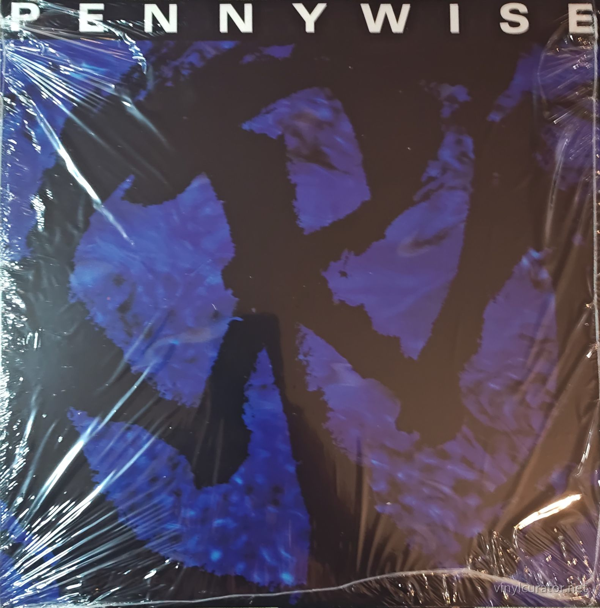
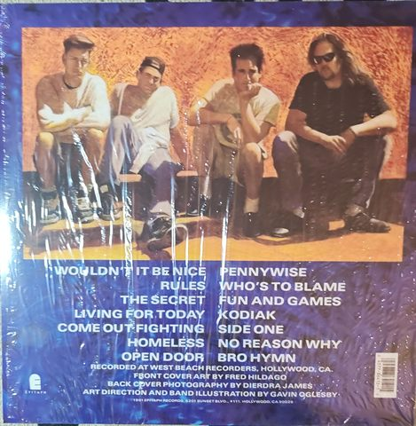
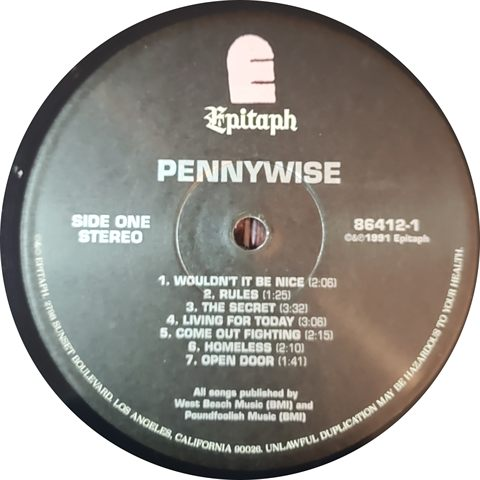
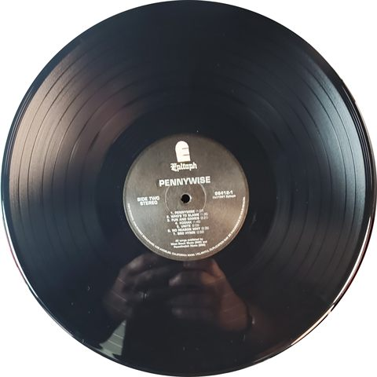
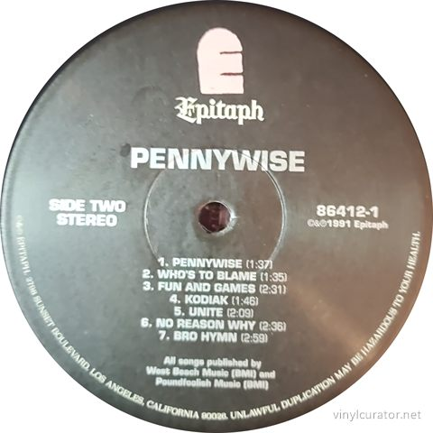
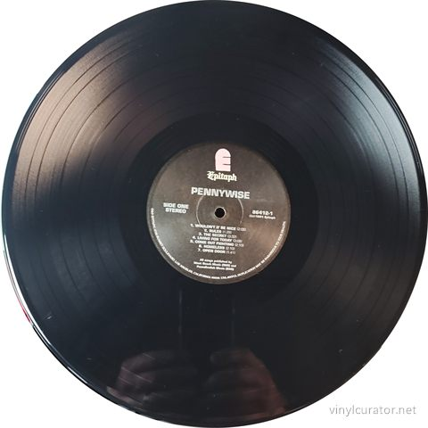

Thank you for buying this record. What follows is its documentation: the
pressing identified, the matrix / runout transcribed by hand from the dead
wax, and the condition as assessed before it was listed. It is yours to keep
with the record.
Pennywise
Pennywise
c. 2018-2024 (undated modern reissue) · Epitaph 86412-1 · Stereo · US · LP · 33 1/3 RPM






Pressing details
Label
Epitaph
Catalogue number
86412-1
Year
c. 2018-2024 (undated modern reissue)
Mono / Stereo
Stereo
Country
US
Format
LP
Speed
33 1/3 RPM
Genre
Punk Rock - Melodic Hardcore / Skate Punk
Producer
Brett Gurewitz, Pennywise
Musicians
Jim Lindberg (vocals), Fletcher Dragge (guitar), Jason Thirsk (bass), Byron McMackin (drums)
Matrix / Runout
Side A: PENNYWISE S/T 86412-1 LIVERMORE A
Side B: PENNYWISE S/T EPITAPH 86412-1 LIVERMORE B
Condition
Cover
NM IN SHRINK/NM IN SHRINK
Vinyl
NM
Variant chronology
1991 - US first press, Rainbo plant, etched 'E-86412-1-A / L-37929' runouts with no Rainbo S-numbers, includes b/w insert
1994 - Rainbo repress, same Greg Lee metal with added S-numbers (S-29116/S-29117 style) in runouts
2014 - Epitaph store exclusive clear vinyl, limited to 500 copies
2018 - black-vinyl reissue
2021 - 30th Anniversary blue w/ black splatter, limited edition
c. 2020s - undated in-print black-vinyl reissue, 'LIVERMORE A/B' runout etchings <- this copy
This Pressing
Modern Epitaph reissue (undated, c. 2018-2024) - replicates the 1991 label/jacket art; 'LIVERMORE A/B' runout etchings = the current in-print reissue variant (Discogs r26866220), not the 1991 Rainbo first press ('E-86412-1-A / L-37929', no S-numbers).
The Album
Pennywise formed in Hermosa Beach, California in 1988, part of the tight-knit South Bay scene that also produced Black Flag, the Descendents, and the Circle Jerks. They cut their self-titled debut in 1991 at West Beach Recorders in Hollywood, the studio run by Bad Religion guitarist and Epitaph founder Brett Gurewitz, who co-produced. Released on Epitaph, it was one of the key early records - alongside Bad Religion's own catalog - in the wave of fast, melodic Southern California hardcore that would define 1990s skate punk and eventually carry labelmates like The Offspring and Rancid to platinum success. Fourteen songs in under half an hour, it pairs breakneck anthems of self-reliance ('Rules,' 'Wouldn't It Be Nice') with socially barbed material like 'Homeless' and the self-mythologizing title track. Its closing song, 'Bro Hymn,' became the band's signature anthem; after bassist Jason Thirsk's death in 1996, the band re-recorded it as 'Bro Hymn Tribute' on Full Circle, and it remains a staple of their live set and of sports arenas worldwide. The album established the classic lineup of Jim Lindberg, Fletcher Dragge, Jason Thirsk, and Byron McMackin and is widely regarded as one of the band's best records and a cornerstone of the Epitaph sound. Its influence on the melodic hardcore and skate-punk scenes of the 90s and beyond is difficult to overstate.
Tracklist
Side 1
1. Wouldn't It Be Nice
2. Rules
3. The Secret
4. Living For Today
5. Come Out Fighting
6. Homeless
7. Open Door
Side 2
1. Pennywise
2. Who's To Blame
3. Fun And Games
4. Kodiak
5. Unite
6. No Reason Why
7. Bro Hymn
The Label
Black/silver Epitaph label with the tombstone 'E' logo and gothic Epitaph script, catalog 86412-1, '(c)&(p)1991 Epitaph', and rim text '6201 SUNSET BOULEVARD, LOS ANGELES, CALIFORNIA 90028. UNLAWFUL DUPLICATION MAY BE HAZARDOUS TO YOUR HEALTH!' - the classic early-90s Epitaph design. Epitaph was founded by Bad Religion's Brett Gurewitz out of the West Beach Recorders operation, and the Sunset Blvd. address was the label's home through its mid-90s punk explosion, so the address dates the artwork, not the pressing: this reissue faithfully replicates the 1991 label art including the original copyright line. The typed runouts 'PENNYWISE S/T (EPITAPH) 86412-1 LIVERMORE A/B' are the decisive evidence - they match the undated modern Epitaph reissue variant (Discogs r26866220), not the 1991 Rainbo original ('E-86412-1-A / L-37929', no S-numbers) or the 1994 Rainbo repress (S-numbers added). This copy therefore sits at the bottom of the pressing hierarchy as the current in-print reissue.
Fidelity
Reissue cut, almost certainly from a digital source/remaster rather than the original analog tapes; pressing quality is standard modern Epitaph fare - serviceable but not audiophile-grade. For sonics the 1991 Rainbo original (and its 1994 repress from the same Greg Lee Processing metal) remains the reference analog-era cut. The 2014 clear-vinyl Epitaph-store exclusive (500 copies) and 2021 30th-anniversary splatter editions share the later reissue source. No dedicated audiophile edition of this title exists, so the fidelity hierarchy is simply: original 1991 pressing on top, all reissues a step below.
Notes
Epitaph 86412-1 - modern black-vinyl reissue of the 1991 debut, not an original pressing. Decisive evidence: typed runouts 'PENNYWISE S/T (EPITAPH) 86412-1 LIVERMORE A/B' match exactly the Discogs reissue variant r26866220, while the 1991 original (r392701) and its 1994 Rainbo repress carry 'E-86412-1-A / L-37929(-S-xxxxx)' etchings. Barcoded back cover and NM-in-shrink condition are consistent with the current in-print reissue sold new by the Epitaph store. The 1991 copyright line and Sunset Blvd. rim text are replicated artwork, not pressing evidence.
About this documentation
Every record in this archive is photographed against a full checklist, its
matrix / runout transcribed by hand, and its pressing identified against label
discographies, variant records and sales histories.
I do that work for other people’s collections too — documenting a
collection record by record, researching individual pressings, and preparing
collections for sale or for insurance. If you have a collection you would like
documented, or a record you want identified properly, get in touch:
email
This record’s page: https://vinylcurator.net/albums/pennywise-pennywise/